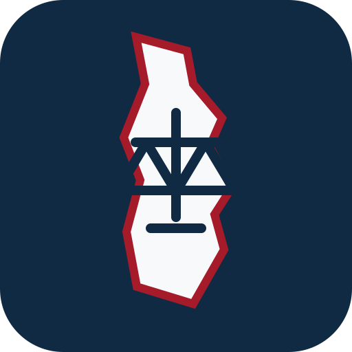

Authority first
Verified sources
Current authority must be reviewed and promoted before it becomes retrieval eligible.

New Hampshire Family Law LLMSource-grounded legal AI
Current authority must be reviewed and promoted before it becomes retrieval eligible.
RSA, Judicial Branch, Supreme Court, and agency terminology replace inherited Maine assumptions.
Drafting and issue spotting retain citations, effective dates, and review warnings.